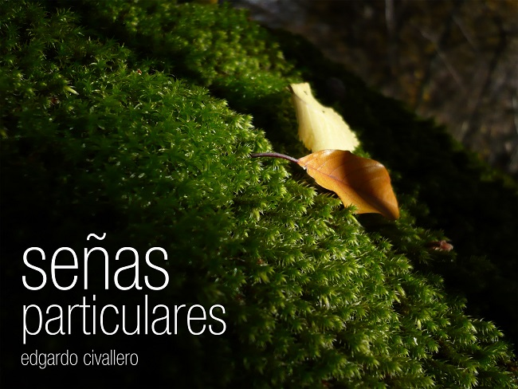
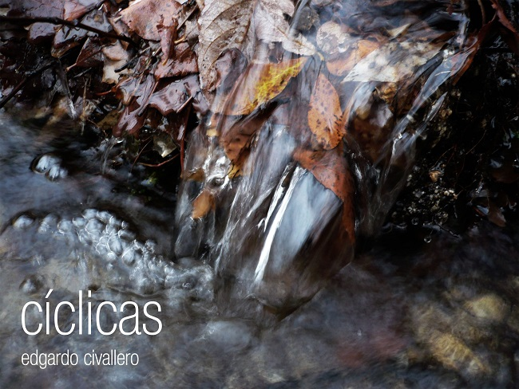
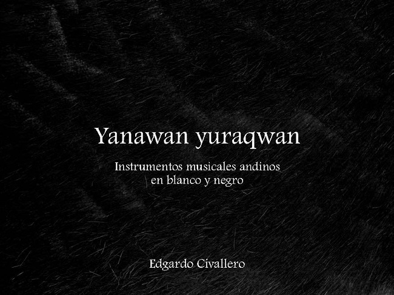

Libros de fotografías
Inicio > Publicaciones > Libros de fotografías
Los siguientes trabajos representan compilaciones de fotografías unidas por una temática común. No hacen hincapié en la calidad de las imágenes, sino en el mensaje a transmitir o la historia a contar, es decir, en el hilo que une a todas las instantáneas.
Todos los contenidos están protegidos por derechos de autor y se distribuyen a través de una licencia Creative Commons (ver copyright y disclaimer).

Transiciones: [agua] en la sierra norte de Madrid (Madrid, 2015) presenta una serie de fotos tomadas a lo largo de siete años en la vertiente sur de la Sierra de Guadarrama (España), conocida popularmente como "sierra norte de Madrid". Las imágenes reflejan los distintas estados del agua y las transiciones entre ellos. Debido a los cambios en el clima de la región y, por ende, en sus ciclos, algunas de las realidades y de las especies que se muestran en las fotografías no son tan comunes hoy, y probablemente desaparecerán en los años venideros. Tales cambios son productos de la actividad humana, y se están volviendo irreversibles.
[Descarga].

Señas particulares: la mirada en los detalles (Madrid, 2016) incluye una serie de imágenes en las que el objetivo se posó en pequeños detalles: objetos, rincones y momentos que muy bien hubieran podido escapar a la mirada de un observador poco atento. El trabajo rescata esos elementos porque los pequeños detalles son los que, sumados, terminan definiendo un paisaje, un lugar o un ecosistema. Son ellos los que conforman un perfil, una identidad, y la propia diversidad.
[Descarga].

Cíclicas: las huellas de las estaciones (Madrid, 2016) comprende una colección de fotografías tomadas en la vertiente sur de la Sierra de Guadarrama (España) a lo largo de cuatro años o, lo que es lo mismo, a través de quince estaciones.
[Descarga].

Yanawan yuraqwan. Instrumentos musicales andinos en blanco y negro (Madrid, 2015) es un álbum fotográfico que presenta, en una selección de 15 imágenes en blanco y negro acompañadas de breves reseñas, algunos de los instrumentos musicales tradicionales andinos más interesantes: quenas, pusi p'ias, sikus, toyos, rondadores, ocarinas, charangos, pingullos, pinkillos, waka pinkillos, waylla qhepas y wank'aras.
[Descarga].